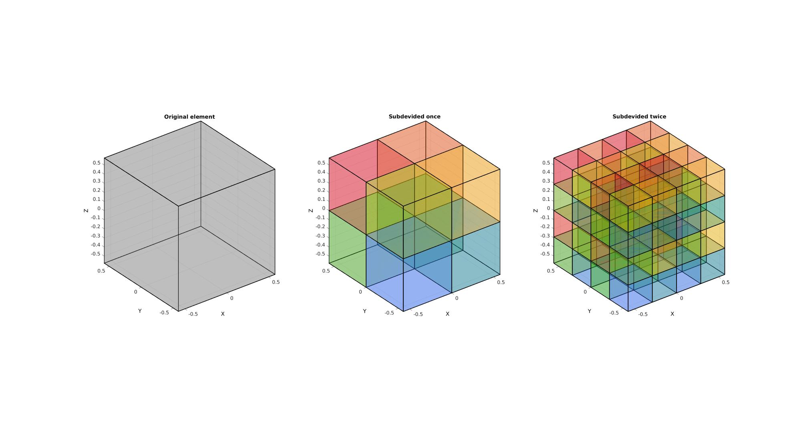
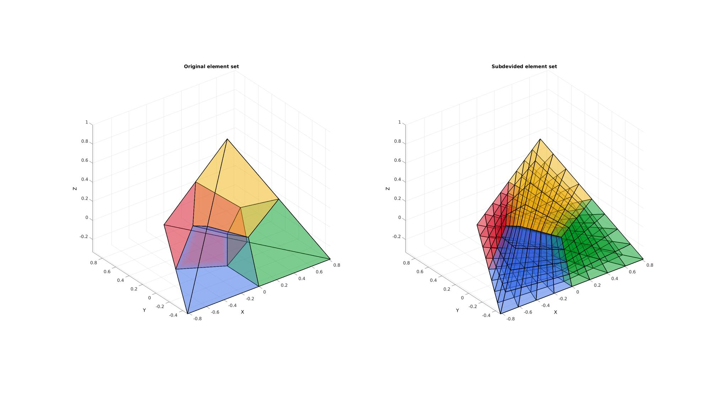
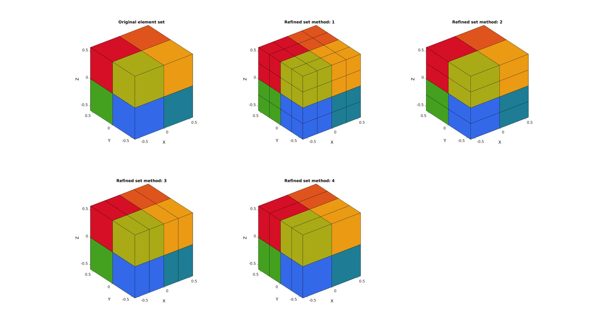

subHex
Below is a demonstration of the features of the subHex function
Contents
Syntax
[Es,Vs]=subHex(E,V,n);
Description
Example:s
clear; close all; clc;
Plot settings
fontSize=15; faceColor1='g'; faceColor2='r'; faceAlpha1=0.3; faceAlpha2=1; edgeColor=0.*ones(1,3); edgeWidth=2; markerSize=2; cMap=gjet(250);
Example: Subdeviding a hexahedron
Creating an example hexahedron
[V,~]=platonic_solid(2,1); E=[1:8];
Subdeviding the hexahedral element
[Es,Vs]=subHex(E,V,1); [E2s,V2s]=subHex(E,V,2);
Visualization
[F]=element2patch(E); %Patch data for plotting Cs=(1:1:size(Es,1))'; [Fs,CFs]=element2patch(Es,Cs); %Patch data for plotting C2s=(1:1:size(E2s,1))'; [F2s,CF2s]=element2patch(E2s,C2s); %Patch data for plotting cFigure; subplot(1,3,1); title('Original element','FontSize',fontSize); xlabel('X','FontSize',fontSize); ylabel('Y','FontSize',fontSize); zlabel('Z','FontSize',fontSize); hold on; patch('Faces',F,'Vertices',V,'FaceColor',0.5*ones(1,3),'EdgeColor',edgeColor,'FaceAlpha',faceAlpha1,'lineWidth',edgeWidth); view(3); grid on; axis equal; axis tight; set(gca,'FontSize',fontSize); subplot(1,3,2); title('Subdevided once','FontSize',fontSize); xlabel('X','FontSize',fontSize); ylabel('Y','FontSize',fontSize); zlabel('Z','FontSize',fontSize); hold on; patch('Faces',Fs,'Vertices',Vs,'FaceColor','flat','CData',CFs,'EdgeColor',edgeColor,'FaceAlpha',faceAlpha1,'lineWidth',edgeWidth); colormap(cMap); view(3); grid on; axis equal; axis tight; set(gca,'FontSize',fontSize); subplot(1,3,3); title('Subdevided twice','FontSize',fontSize); xlabel('X','FontSize',fontSize); ylabel('Y','FontSize',fontSize); zlabel('Z','FontSize',fontSize); hold on; patch('Faces',F2s,'Vertices',V2s,'FaceColor','flat','CData',CF2s,'EdgeColor',edgeColor,'FaceAlpha',faceAlpha1,'lineWidth',edgeWidth); colormap(cMap); view(3); grid on; axis equal; axis tight; set(gca,'FontSize',fontSize); drawnow;
Example: Subdeviding a set of hexahedrons
Creating an example set of hexahedrons
[V,~]=platonic_solid(1,1); E=[1:4]; [E,V]=tet2hex(E,V); C=(1:1:size(E,1))';
Subdeviding the hexahedral element
[Es,Vs,Cs]=subHex(E,V,2);
Visualization
[F,CF]=element2patch(E,C); %Patch data for plotting [Fs,CFs]=element2patch(Es,Cs); %Patch data for plotting cFigure; subplot(1,2,1); title('Original element set','FontSize',fontSize); xlabel('X','FontSize',fontSize); ylabel('Y','FontSize',fontSize); zlabel('Z','FontSize',fontSize); hold on; patch('Faces',F,'Vertices',V,'FaceColor','flat','CData',CF,'EdgeColor',edgeColor,'FaceAlpha',faceAlpha1,'lineWidth',edgeWidth); view(3); grid on; axis equal; axis tight; set(gca,'FontSize',fontSize); subplot(1,2,2); title('Subdevided element set','FontSize',fontSize); xlabel('X','FontSize',fontSize); ylabel('Y','FontSize',fontSize); zlabel('Z','FontSize',fontSize); hold on; patch('Faces',Fs,'Vertices',Vs,'FaceColor','flat','CData',CFs,'EdgeColor',edgeColor,'FaceAlpha',faceAlpha1,'lineWidth',edgeWidth); colormap(cMap); view(3); grid on; axis equal; axis tight; set(gca,'FontSize',fontSize); drawnow;
Example: Subdeviding in 1 direction by specifying splitMethod
The hexahedral elements can also be split in a single direction. If an additional input splitMethod is provided. By setting splitMethod=1 the element is split in the top-bottom direction, by setting splitMethod=2 the element is split in the left-right direction, by setting splitMethod=1 the element is split in the front-back direction. The actual orientations depend on the mesh. What is referred to here as top are the first 4 nodes in the element description, the last 4 nodes are the bottom. These splitting methods produce conforming meshes for structured hexahedral meshes as the element orientations may not match up for unstructured hexahedral meshes.
Creating an example hexahedral mesh with stretched elements in z-direction. After splitting in this direction the elements are more homogeneous in shape.
[V,~]=platonic_solid(2,1); E=[1:8]; [E,V]=subHex(E,V,1); C=(1:1:size(E,1))'; nRefine=1;
[F,CF]=element2patch(E,C); %Patch data for plotting cFigure; subplot(2,3,1); hold on; title('Original element set','FontSize',fontSize); gpatch(F,V,CF,'k',1); % patchNormPlot(F,V); colormap(cMap); axisGeom(gca,fontSize); for q=1:1:4 % Subdeviding the hexahedral element splitMethod=q; [Es,Vs,Cs]=subHex(E,V,nRefine,splitMethod); [Fs,CFs]=element2patch(Es,Cs); %Patch data for plotting subplot(2,3,q+1); hold on; title(['Refined set method: ',num2str(q)],'FontSize',fontSize); gpatch(Fs,Vs,CFs,'k',1); % patchNormPlot(Fs,Vs); colormap(cMap); axisGeom(gca,fontSize); end drawnow;

GIBBON www.gibboncode.org
Kevin Mattheus Moerman, gibbon.toolbox@gmail.com
GIBBON footer text
License: https://github.com/gibbonCode/GIBBON/blob/master/LICENSE
GIBBON: The Geometry and Image-based Bioengineering add-On. A toolbox for image segmentation, image-based modeling, meshing, and finite element analysis.
Copyright (C) 2019 Kevin Mattheus Moerman
This program is free software: you can redistribute it and/or modify it under the terms of the GNU General Public License as published by the Free Software Foundation, either version 3 of the License, or (at your option) any later version.
This program is distributed in the hope that it will be useful, but WITHOUT ANY WARRANTY; without even the implied warranty of MERCHANTABILITY or FITNESS FOR A PARTICULAR PURPOSE. See the GNU General Public License for more details.
You should have received a copy of the GNU General Public License along with this program. If not, see http://www.gnu.org/licenses/.